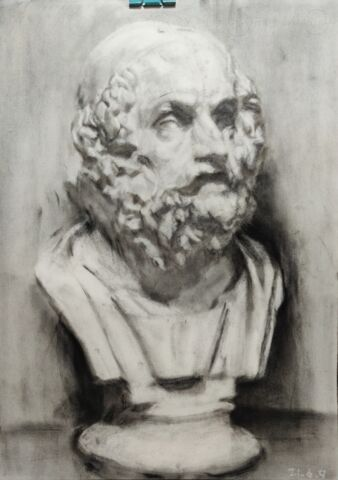

快速形体分解
Contents
快速形体分解#
- 日期
- 位置
:event.location:` <>`
本训练是自主训练，是 形体分解训练 的后续。
要求#
使用炭精粉画小画幅（<= 4K）肖像，照片、模特都要练
速度加快，一张最多画一天
尽量不动橡皮，不要返工
注重形体，注重一般意义上的「形准」（动态、特征到位）
不需要画细致
目的#
重复 形体分解训练 中的绘画步骤，使其更稳定、科学
- 额外的好处：
训练作画速度，摆脱橡皮擦 —— 以后画画的时间会更少，另外磨磨蹭蹭显得很不专业
破除自己「好像只会画石膏」的心理 —— 理论上我应该啥都能画一点了
熟悉炭精粉的材料特性
总之我想自信地画，我需要一个开拓一个舒适区。
笔记#
问题#
画模特没问题，画照片的时候我不会起型了#
- 为什么？
画室里的人像照片是棚拍，光散，亮部变化多，暗面占比少，人物体积感弱
照片的观察手段单一，最简单的亮暗面都无法验证
以前的「通过找亮暗面起型局部推进」的方法遇到了问题 —— 暗部太少以至于没有参照点， 画几笔看不到光感会动摇。且无法验证某块颜色到底是亮面暗面，同样画的没有底气。
- 怎么做？
纯光影局部推进的起型法行不通了——我的手头的准确度照片带来的信息缺失。
自我检查#
高度压缩的面不看形状，看对应与对称
缺空间的地方往往缺形体，而非「这条线位置不太对」，是意识问题而非功夫问题
面总是有相对的上下左右，目前看来我总忽视向下的面
一眼看上去难以抄形状的曲线（衣领） - 有对称的画要看对称的 - 用要分解到不同的形体上（一般是三分法）
当发现「画不出体积」的时候，放弃像不像的想法，用简单的几何形体去拟合
形体的判断是综合的，依赖视觉经验的，当发现自己「看不出形体」时，应注意自己的观察是否局限了
大形体的交汇处往往有作为过渡的小形体，大概率是椭圆体
人脸的内部构造#
利用 内部构造的知识来强化对象的体积感、特征，而非忠实地还原一个陌生人，一张普通的照片 ——
👤SilverRainZ
注意
无论能不能看见，内部构造都在那儿：
能看见：那就看见了
不能看见：必然会通过皮肤产生某种暗示
术语#
油画笔+炭精粉的材料技法#
不止于习作#
- 艺术来自陌生感
我越来越不满足无聊的，正儿八经的画面，在画面中加入有意思的元素
- 不被阶段性要求困住
「反对虚实处理，完全尊重自然」是基础训练的阶段要求，为了对抗苏派的虚实处理而提出的。但虚实是手段，手段无好坏，不必抗拒。
同理，「概括」亦非洪水猛兽，一切看你的绘画目的。
习作#
以 fm-%d%d%d (Fast Modeling) 为 ID，不需要特别给习作命名。
{kind=link}
{kind=link}
{kind=link}
{kind=link}
- fm-004#
- 编号
fm-004
- 日期
2020-05-18
- 尺幅
- 媒介
- 画集
挑战大正脸的另一张。
备注
老师改过，并强调了大形体的重要性
{kind=link}
{kind=link}
{kind=link}
{kind=link}
{kind=link}
- fm-009#
- 编号
fm-009
- 日期
2020-05-30 2020-06-09
- 尺幅
- 媒介
- 画集
 趁周末的时候，尝试一下画石膏，验证一些想法：
- 目前的观察方式是对的吗，在石膏上是不是确实更容易观察？
是的，是的
- 6386 虽然好控制，但笔毛偏硬，伤纸，目前换回狼毫是不是更有利于梳理形体？
是的
- 凭感觉，配合对称对应的的观察方法起大轮廓作为起稿的第一步如何？
效果非常好，请凭感觉！
起大轮廓的目的在于：在纸上建立起对象的边界，方便你注入你的空间想象力。一直以来总是抗拒「不确定性的起稿方式」，但想来在空白的纸上，单靠想象力画出亮暗面实在是不容易，因此，先要有以不确定的方式确定一些东西，作画才能顺利继续。
目前探索到的可靠起稿方式：
不在乎形准：从有光感、空间感强烈的地方直接画，局部推进
有点在乎形准：画大轮廓，在大轮廓中画最大的形体，对内部构造的知识有一定要求
非常在乎形准：不可能，我画不准，学
洛必兹打格子吧
{kind=link}
{kind=link}
{kind=link}
{kind=link}
{kind=link}
{kind=link}
{kind=link}
{kind=link}
如果你有任何意见，请在此评论。 如果你留下了电子邮箱，我可能会通过 回复你。